Enti chepte click chesestava 😒
No ah? no chance.
Hiiiii bujjjjjjiiiiii !!!!!!
here is your suprise, wait cheyipicha dinikosam ninnu..
open cheyakunda no kottaku
kodite inko suprise ostadi 😁..
Enti chepte click chesestava 😒
No ah? no chance.

Hope this makes u smile 😉😁
itlu me ganesh, inka nickname petale naku 😒🤦♂️
 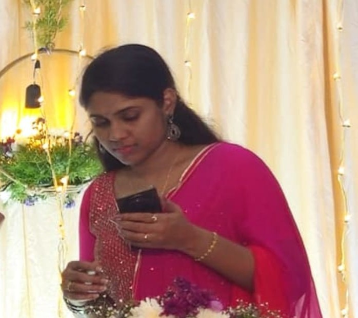
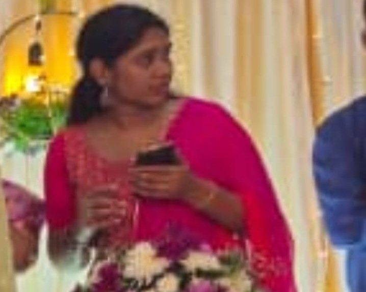
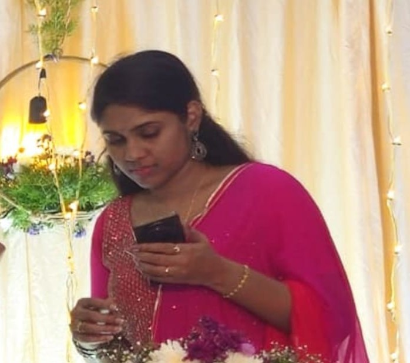
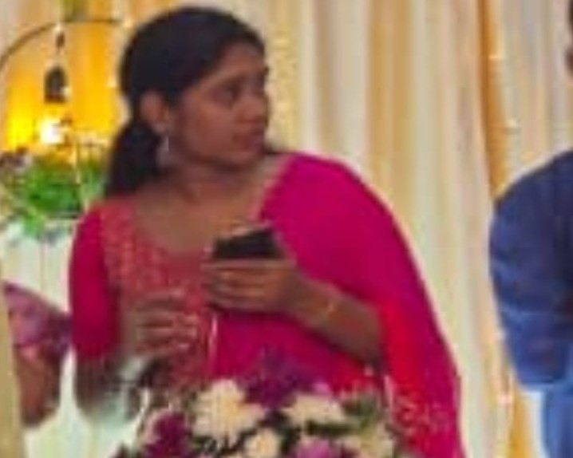
 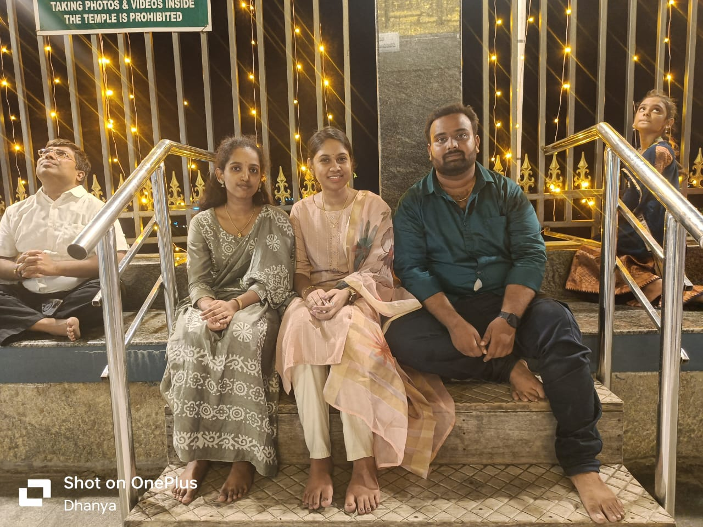
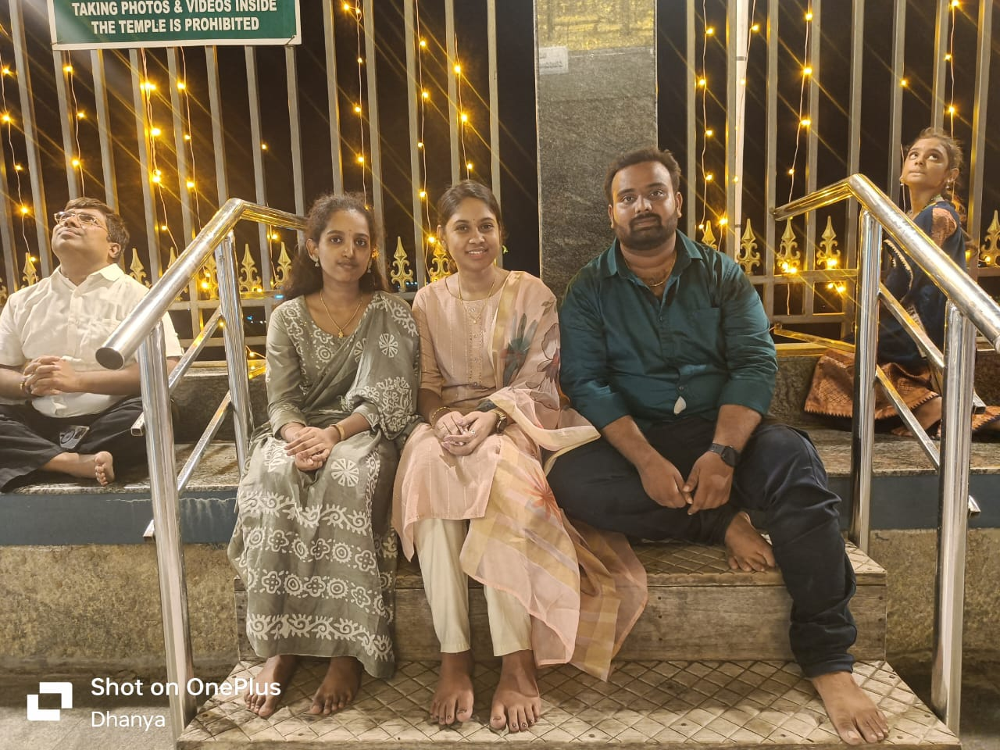
 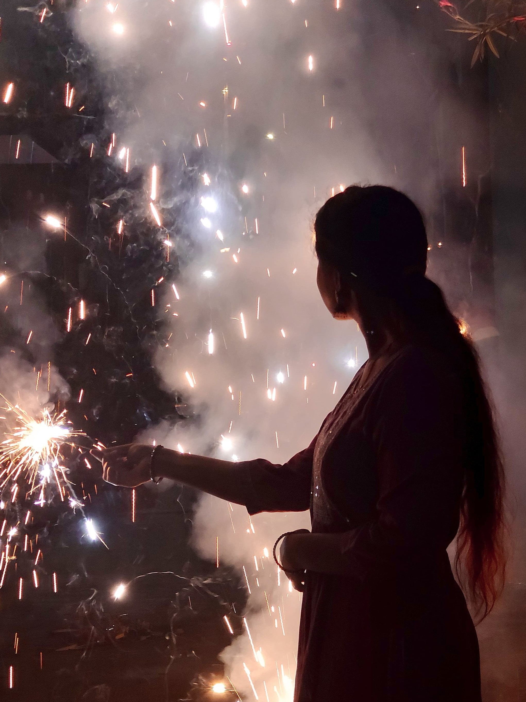
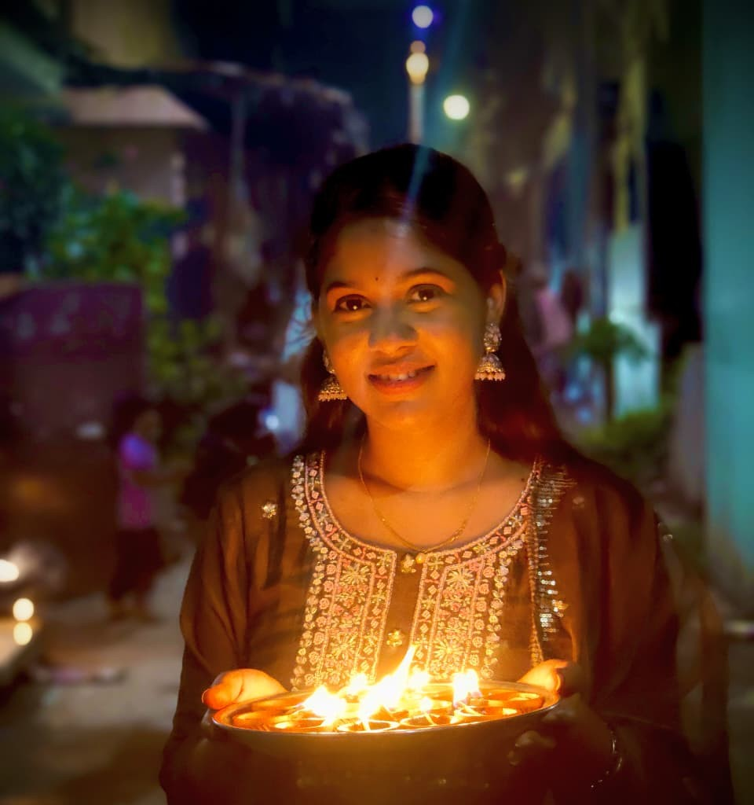
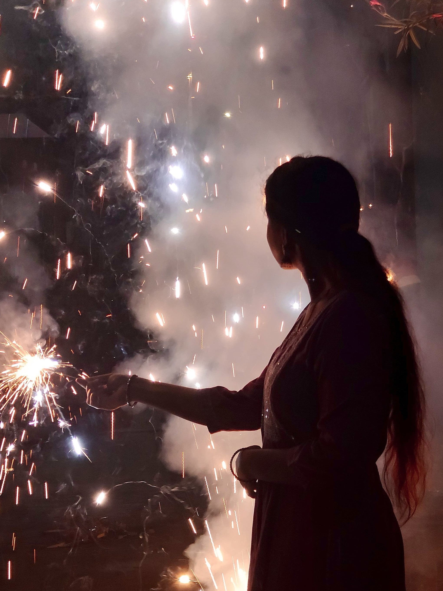
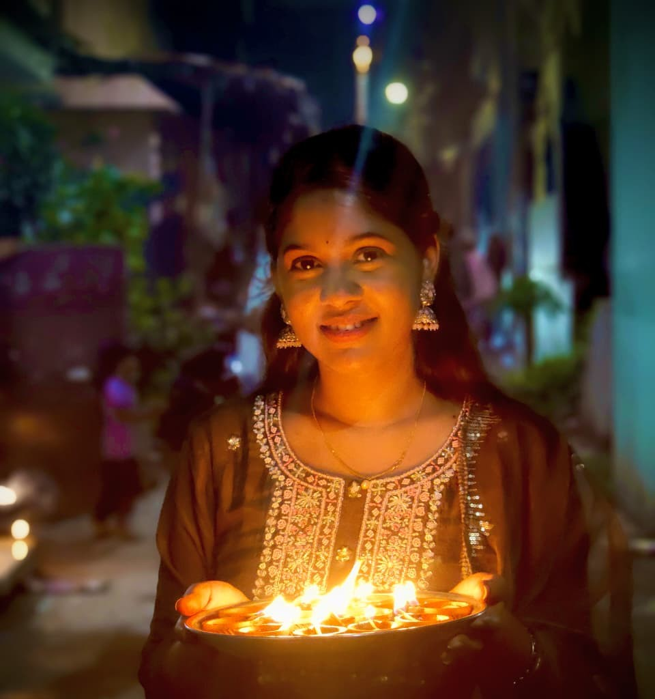
 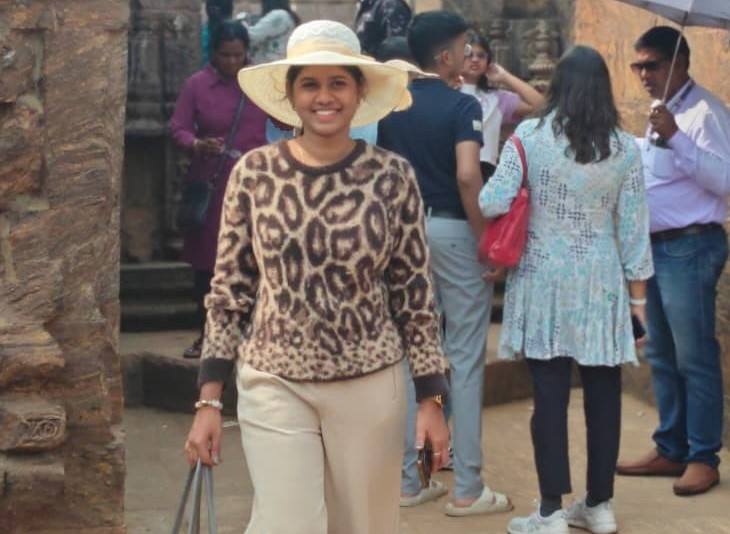
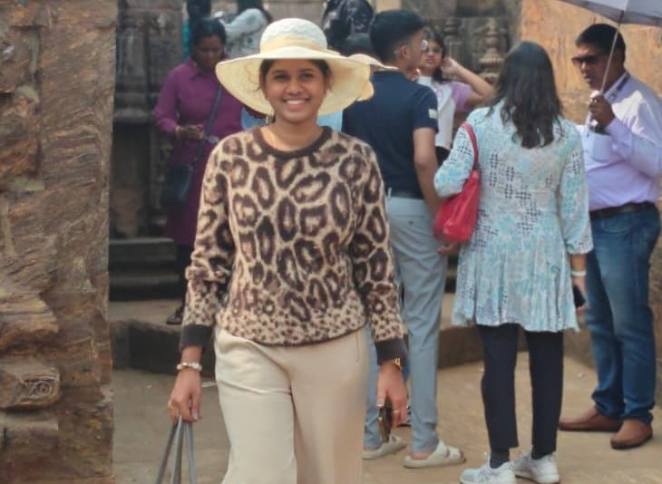

 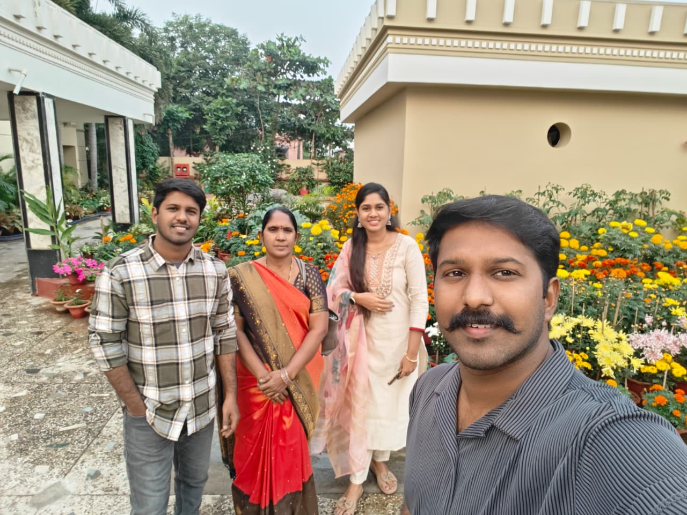
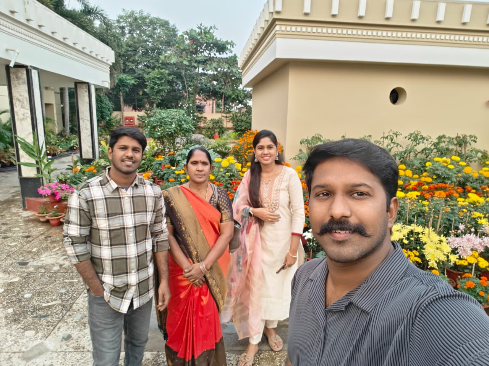
pakkaki slide chey pics ni and here’s a letter that i want you to read…
They say first meetings matter,
because first impressions quietly decide how long someone stays in your thoughts.
I first saw you on October 2nd.
You were sitting on the chairs, talking with Dhanya and Kishore anna.
I remember thinking—okasari matladite bagundu… and somehow, that happened.
To be honest, Kishore anna tho full ga matladanu, friends ayyam too.
Pure, honest friendship.
But deep inside, I feel like I used him as a reason to get to you 🙂↕️
End of the day though, we talked—and we became friends 🥳
Comedy enti ante, appude manaki parichayam ayindi.
That same morning, andaram breakfast ki vellam—wedding appudu—Deepthi and others tho.
Sudden ga flowers ochayi.
Flow lo tiskunna… then oka 2 seconds lo brain full calculations 😂
Ippude ivvala? Parichayam kuda sarigga ledu… kottestundemo ani anipinchi,
last ki enduku anesi Deepthi ke ichesa aa flowers.
Aa whole thought process literally 2 seconds lo jarigindi.
Appudu naku time spend cheyali ani anipinchindi netho.
Enduku ante telidu…
Felt like we could talk freely, about anything, without effort.
Then Deepthi pilichindi.
You were there too.
Tanu cheppindi—temples chupinchali ani.
Aa moment tho na 3 days sleepless nights anni appude poyayi 😜
Car lo koncham matladukunnam.
Intiki velli amma ki sakulu cheppi, afternoon malli bayataki ochesa.
ISCKON ki vellam—career gurinchi,
Rajahmundry slang gurinchi,
Dhanya multi-language robot ani jokes,
ala ala time ela poyindo teliyaledu.
Malli meeru kindaki ocharu, ready ayyesi.
Bike uncle ivvadam expect cheyaledu—luck no.1
Petrol almost lekapoyina long ga nadichindi—luck no.2
Darshanam daggara pakkaki aapadam—luck no.3
Ila lucks cheppukuntu pothe ee letter aipodu ani ikkade aapestunna 😂
Chandragiri fort ki vellam—closed.
Akkada nuvvu tulasi leaf tiskunnav.
“Naku kuda ivvu” ante ichav.
Kishore anna face expression chusi navvu aapukoleka poya 😂
Na kuturni bandi ekkiste idha nuv chesedi? ani eyes tho matladadu papam 😂
Vakula Mata temple ki vellam.
Bike drive chesav… just 2 minutes.
Ahaaaa—driver ayipoyav 😏
That whole day felt… good.
Simple ga, light ga, calm ga.
Next day malli kalisi veldam ani morning ocha.
But kudharaledu—thanks to my bewars friend 😑
Sarle ani koncham matladi start ayya.
Later, Nandhini pic group lo ochindi.
Idi ekkado chusinattu undi ani anipinchi Deepthi ki call chesa.
Evarki call chesano kuda sarigga gurtuledu 😂
But finally—fort ki ocha.
Ludo aadam.
Bagundi.
Railway station daggara goodbye cheppaledu.
Enduku ante, station ki ochi goodbye chepte…
farewell feeling vastundemo ani bhayam.
And Deepthi vallu andaru unnaru kada—nee friends.
Nenu oste bagodu emo ani raledu.
But appude asalu story start ayindi.
Slow ga, calm ga,
we got to know each other.
Nee childhood stories,
miniatures gurinchi,
little girl modelling gurinchi,
nee family gurinchi,
Salman bhai ante neeku—and maa family ki—enta istamo 😌
nee favourite dish pulihora…
Nee life gurinchi natho share cheskunav.
And I felt close to you,
because you trusted me with things you don’t tell everyone.
Ippatike letter chala pedda ayindi 😂
So one last thing.
Happy New Year.
Ee year lo neeku happiness untundi ani korukuntunna,
and I truly pray for that.
Emaina sad ga anipinchina,
lonely ga feel ayina,
or just matladali anipinchina…
Nenu unna ani marchipoku.
Upcoming days ki all the very best.
And finally…
Idhi na surprise.
New Year kosam 🤗
Hope you like it 😊